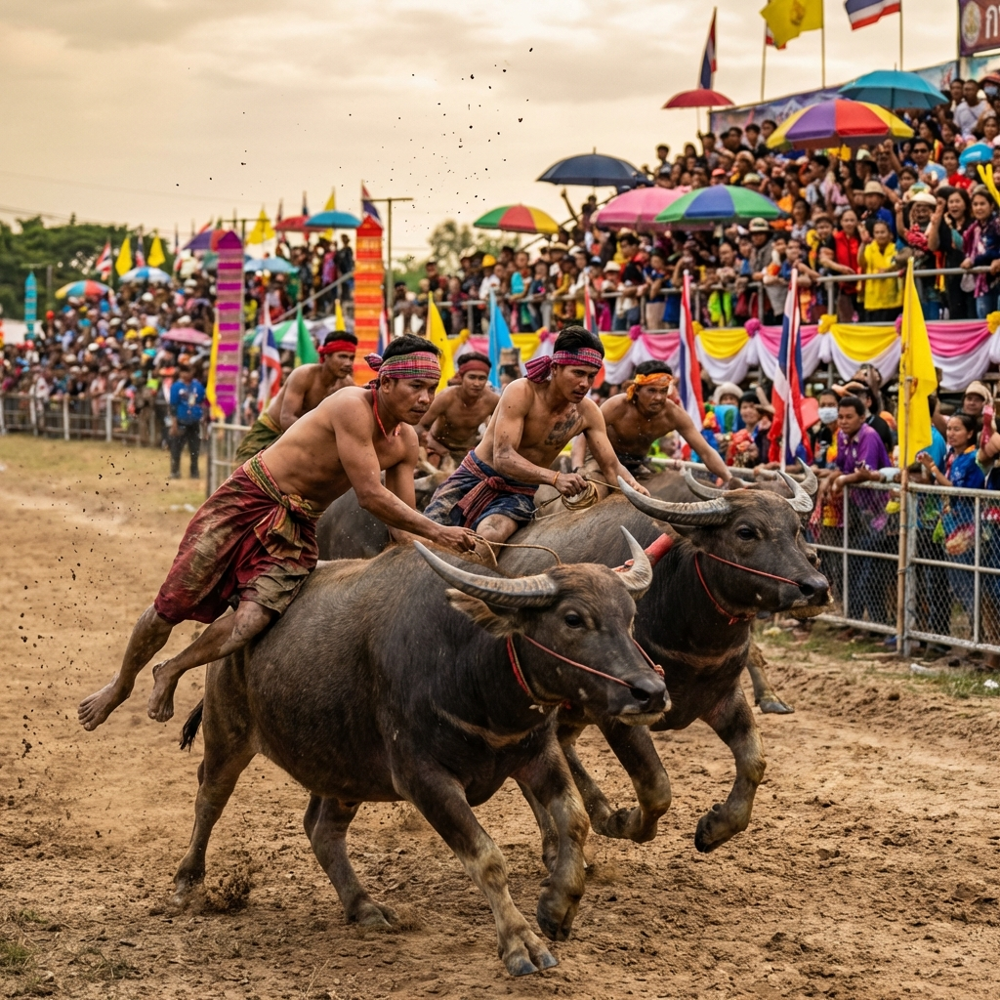
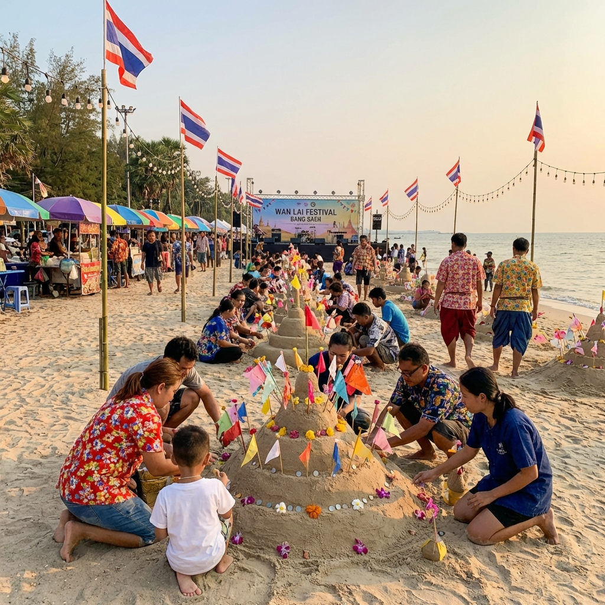

เป็นประเพณีเก่าแก่และเป็นเอกลักษณ์หนึ่งเดียวของจังหวัดชลบุรี จัดขึ้นเป็นประจำทุกปีในวันขึ้น 14 ค่ำ เดือน 11 เพื่อเป็นการทำขวัญควายและให้ควายได้พักผ่อนหลังจากตรากตรำไถนามาตลอดฤดูกาล ภายในงานจะมีการแข่งขันวิ่งควายรุ่นต่างๆ และการประกวดความสมบูรณ์ของควาย

หรืองานทำบุญวันไหล คือเทศกาลสงกรานต์ในแบบฉบับของชาวชลบุรี โดยปกติจะจัดขึ้นหลังวันสงกรานต์ปกติเล็กน้อย (ประมาณวันที่ 16-17 เมษายน) กิจกรรมสำคัญคือการก่อพระทรายวันไหล ซึ่งมีการประดับตกแต่งกองทรายอย่างสวยงามวิจิตรตระการตา บริเวณชายหาดบางแสน
